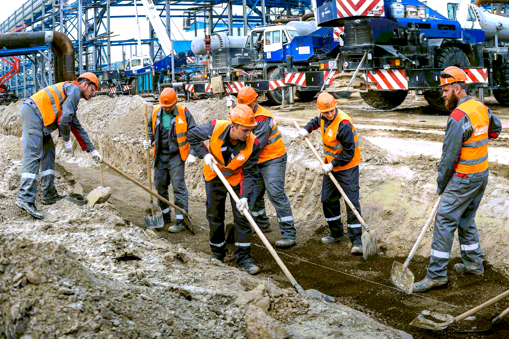

Разнорабочие на строительный объект
 Разнорабочие на строительный объектПри возведении того или иного объекта проводится огромное количество разнообразных работ. От специалистов на площадке зависит, успеют ли строительство закончить в обозначенный срок согласно всем нормативным требованиям и правилам. Важно соблюдение внимательности, аккуратности, точности при достаточно высокой скорости выполнения работ. Разнорабочие становятся незаменимыми помощниками на строительных площадках. Они возьмут на себя выполнение ряд косвенных задач, снижающих нагрузку на квалифицированных специалистов. У нас есть разнорабочие на стройку, которые выполнят всю необходимую работу.
Разнорабочие на строительном объекте: какие работы выполняютВозведение строительных объектов является крайне масштабны, а потому справиться самостоятельно с этим невозможно. Наши рабочие на стройку способны выполнять:
- Монтажные работы. Предоставляем квалифицированных монтажников для различных задач: сантехники, электрики, отопления и т.д.
- Демонтажные работы. Список задач достаточно обширен: от снятия старых отделочных материалов до полного разрушения зданий и сооружений.
- Земляные работы. Рытье траншей, котлованов и других видов задач как вручную, так и с помощью специализированной техники.
- Ландшафтные работы. Рабочие выполнят все поставленные задачи по благоустройству участка.
- Фасадные, отделочные, кирпичные работы и т.д.
Мы имеем обширный штат работников, способных выполнить различные задачи в установленные сроки. При этом они будут соответствовать всем нормативным требованиям. Мы предоставляем квалифицированных разнорабочих со значительным опытом работ. Это позволит Вам возвести объект в эксплуатацию в назначенные сроки. С нами Вы легко ускорите темпы строительства, не ухудшая качество возведения. Наши специалисты могут убрать территорию, собрать и отсортировать мусор с дальнейшей его погрузкой, выкопать траншеи, выгребные ямы, колодцы и котлованы, переместить контейнеры и строительные грузы. Список работ крайне обширен. Подробнее об этом Вы можете узнать у нашего менеджера.
Преимущества обращения к намЕсли Вам нужно найти рабочих на стройку напишите нам на электронную почту или позвоните. Мы предлагаем выгодные условия сотрудничества как для физических, так и для юридических лиц:
- Оптимальные цены и фиксированная стоимость услуг на момент подписания договора.
- Бонусы и скидки для постоянных клиентов и при оформлении крупных заказов.
- Гарантия соблюдения сроков как по предоставлению специалистов, так и по окончанию выполнения работ.
- Предоставление работников, исключительно граждан Российской Федерации.
При необходимости мы можем провести замену разнорабочих, если они Вам не понравились чем-то. Мы индивидуально подходим к каждому заказчику, подстраиваясь по его условия.
Оформление заказа и оплатаОформить заказ на разнорабочих для строительства Вы можете по телефону, электронной почте или через мессенджеры. Контактные данные опубликованы на сайте. Оплата производится наличным и безналичным расчетом. Все необходимые документы мы подготовим.
12.08.2022